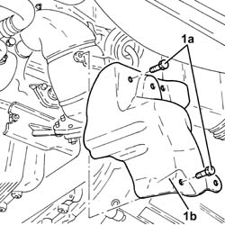
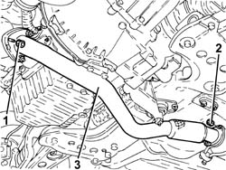
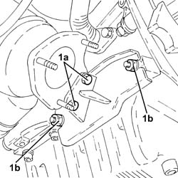
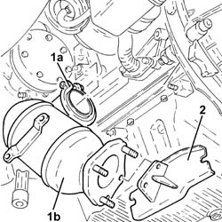
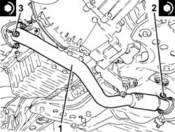
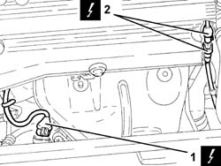
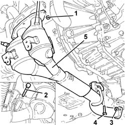
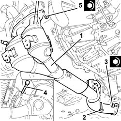

1080B40 CATALYTIC PRE-CONVERTER - R R
- Path
- Procedures > 10 ENGINE UNIT > 1080 EXHAUST EMISSION CONTROL SYSTEM > 1080B EXHAUST EMISSION CONTROL SYSTEM > 1080B40 CATALYTIC PRE-CONVERTER - R R
- Kind
- repair procedure (removal / refitting; the operation number is the code)
- Applies to
- engines: 1.8 T.SPARK, 1.9 JTD 16V; all production periods
- Interactive page
- https://sloeber94.github.io/elrnDB-aGt/en/#/125001121
Applies to: engines: 1.9 JTD 16V; all production periods
 Removing
Removing
 Refitting
RefittingPosition the vehicle on the ramp
Proceed with removal
Op. 7055B54 UNDER-ENGINE GUARD - R R
1. Undo the bolts (1a) and remove the exhaust manifold heat shield (1b).

Applies to: engines: 1.9 JTD 16V; all production periods
1. Undo the nuts fixing the front section of the exhaust pipe to the catalytic pre-converter.
2. Undo the nuts fixing the front section of the exhaust pipe to the catalytic converter.
3. Remove the front exhaust pipe section complete with seals.

Applies to: engines: 1.9 JTD 16V; all production periods
1. Undo the bolts (1a) and the nuts (1b) fixing the catalytic preconverter mounting bracket.

Applies to: engines: 1.9 JTD 16V; all production periods
1. Loosen the collar (1a) and remove the catalytic preconverter (1b).
2. Keep the catalytic preconverter mounting bracket.

Applies to: engines: 1.9 JTD 16V; all production periods
Refitting
RemovingPlace the catalytic preconverter complete with mounting back in its housing and fasten it to the turbocharger using the collar.
Tighten the bolts and the nuts fixing the catalytic preconverter mounting bracket.
1. Place the front section of the exhaust pipe with gaskets back in its housing.
2. Tighten the nuts securing the exhaust pipe front section to the catalytic converter to the specified torque.
 | Fastening | Component | Ø | Value (daNm) |
|---|---|---|---|---|
2 | Nut | PRE-CAT CONVERTOR/CAT CONVERTOR PIPE | M8 | (Catalytic converter side) 2.3 ÷ 2.8 |
3. Tighten the nuts fixing the front section of the exhaust pipe to the catalytic preconverter to the recommended torque.
| Fastening | Component | Ø | Value (daNm) |
|---|---|---|---|---|
3 | Nut | PRE-CAT CONVERTOR/CAT CONVERTOR PIPE | M8 | (Catalyitic preconverter side) 2.3 ÷ 2.8 |

Applies to: engines: 1.9 JTD 16V; all production periods
Place the lower exhaust manifold heat shield back in its housing and fix it using the bolts.
Proceed with refitting
Op. 7055B54 UNDER-ENGINE GUARD - R R.
Remove the car from the ramps.
Applies to: engines: 1.8 T.SPARK; all production periods
Removing
RefittingPosition the vehicle on the ramp.
Ensure that the ignition key is in the OFF postition, then disconnect the battery negative terminal.
Name | Connector | |
|---|---|---|
- | Battery | See A1B BATTERY ( CONNECTORS ) |
1. Disconnect the electrical connection for the right Lambda sensor and release the wiring from the bands.
Name | Connector | |
|---|---|---|
1 | Lambda sensor on left pre-catalyzer | See K16 LAMBDA SENSOR ON PRE-CATALYZER-2 |
2. Disconnect the electrical connection for the left Lambda sensor and release the wiring from the fastenings.
Name | Connector | |
|---|---|---|
2 | Lambda sensor on pre-catalyzer | See K15 LAMBDA SENSOR ON PRE-CATALYZER ( ENGINE ) |

Applies to: engines: 1.8 T.SPARK; all production periods
Proceed with the removal
Op. 1072C44 EXHAUST MANIFOLD HEAT SHIELD ON BULKHEAD - R+R.
1. Undo the nuts fixing the catalytic pre-converter, manifold side.
2. Undo the bolt fixing the catalytic pre-converter, crankcase mounting bracket side.
3. Undo the nuts fixing the catalytic pre-converter, catalytic converter side.
4. Undo the bolt fixing the catalytic pre-converter flexible mounting, front suspension crossmember side.
5. Remove the catalytic preconverter complete with Lambda sensors.
Remove the gaskets.

Applies to: engines: 1.8 T.SPARK; all production periods
Refitting
Removing1. Place the catalytic pre-converter, complete with Lambda sensors and gaskets, back in its housing.
2. Tighten the bolt fixing the catalytic pre-converter flexible mounting, front suspension crossmember side.
3. Tighten the nuts fixing the catalytic pre-converter, catalytic converter side, to the recommended torque.
Fastening | Component | Ø | Value (daNm) | |
|---|---|---|---|---|
3 | Nut | CATALYTIC PRE-CONVERTER | M8 | (Catalytic converter side) 2.7 ÷ 3.3 |
4. Tighten the bolt fixing the catalytic pre-converter, crankcase mounting bracket side.
5. Tighten the nuts fixing the catalytic pre-converter, manifold side, to the recommended torque.
Fastening | Component | Ø | Value (daNm) | |
|---|---|---|---|---|
5 | Nut | CATALYTIC PRE-CONVERTER | M8 | (Manifold side) 2.7 ÷ 3.3 |

Applies to: engines: 1.8 T.SPARK; all production periods
Proceed with the refitting
Op. 1072C44 EXHAUST MANIFOLD HEAT SHIELD ON BULKHEAD - R+R.
Connect the electrical connections for the Lambda sensors and fix the electrical wiring.
Connect the negative (-) battery terminal.
Remove the car from the ramp.
Topics linked from this page (2)
Topics that link to this page (25)
- 0510C20 LUBRICATION SYSTEM - CHECK DELIVERY PRESSURE
- 1008A44 REAR RIGID MOUNT - R R
- 1008B20 POWER UNIT INTERMEDIATE MOUNT FLEXIBLE BLOCK - REPLACE
- 1020A20 CRANK CASE OIL SUMP - R + R CLEAN SEALS FOR SEALANT APPLICATION
- 1020D10 FRONT CRANK SHAFT OIL SEAL COVER - R + R AND REPLACE SEALS WITH TIMING BELT REMOVED
- 1020D15 FRONT CRANKSHAFT OIL SEAL COVER-R+R AND REPLACE SEALS FOR ENGINES WITH OIL PUMP ON CRANKSHAFT AND HEAT EXCHANGER
- 1020D38 FLYWHEEL SIDE OIL SEAL - REPLACE
- 1024B10 ENGINE FLYWHEEL - R + R FOR VERSIONS WITH MANUAL GEARBOX
- 1028H10 PISTON WITH CONNECTING ROD - R R
- 1076B12 EXHAUST PIPE ASSEMBLY R+R EMISSION CONTROL VERSIONS
- 1084A42 ENGINE OIL TEMPERATURE SENDER UNIT - R + R
- 1088D24 RIGID PIPE FOR COOLANT INLET TO WATER PUMP - R + R
- 1810A20 CLUTCH - R + R
- 1820B30 SLAVE CYLINDER - R + R
- 2110A10 MANUAL GEARBOX AND DIFFERENTIAL - R + R
- 2710A32 INTERMEDIATE DRIVE SHAFT BEARING SUPPORT - R + R WITH INTERMEDIATE DRIVE SHAFT REMOVED
- 2710A35 INTERMEDIATE DRIVE SHAFT MOUNT - R R
- 3340B56 RIGID PIPE FROM HYDRAULIC CONTROL UNIT TO RIGHT FRONT BRAKE - R.R.
- 4410c10 FRONT SUSPENSION STABILIZER BAR - R+R - CHECK WHEEL GEOMETRY SEPARATELY
- 4410D13 FRONT SUSPENSION BEAM - R R
- 4410D15 FRONT SUSPENSION BEAM COMPLETE WITH WISHBONES AND STABILISER BAR R R
- 5510C34 RPM AND TIMING SENSOR (SINGLE) - R+R
- 5510C42 KNOCK SENSOR - R+R
- 5520B10 STARTER MOTOR - R+R
- 5530A10 ALTERNATOR - R+R